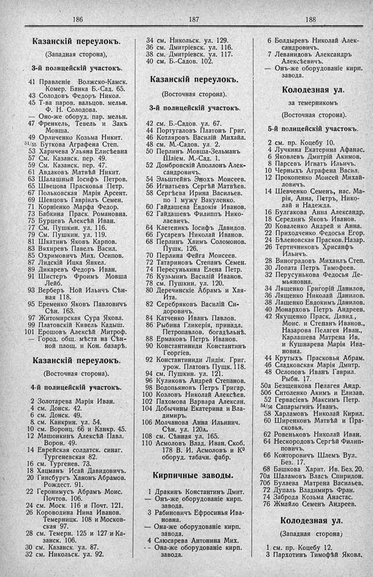

Лист источника 194
Скан

Распознанный текст
186
Казанскій переулокъ.
(Западная сторона),
3-й полицейскій участокъ.
41 Правленіе Волжско-Камск.
Комер. Банка Б.-Сад. 65.
43 Солодовъ Федоръ Никол.
45 Т-ва паров. вальцов. мельн.
Ф. Н. Солодова.
— Оно-же оборуд. пар. мельн.
47 Френкель, Тевель и Закъ
Мовша.
49 Орличенко Козьма Никит.
51/55 Буткова Аграфена Степ.
53 Харичева Ульяна Елисѣевна
57 См. Казанск. пер. 49.
59 См. Казанск. пер. 47.
61 Авдаковъ Матвѣй Никит.
63 Шалашный Іосифъ Петров.
65 Швецова Прасковья Петр.
67 Польковская Марія Арсент.
69 Шевцовъ Гавріилъ Семен.
71 Корніенко Марфа Федор.
73 Бабкина Праск. Романовна.
75 Бурцевъ Алексѣй Иван.
77 См. Пушкин. ул. 116.
79 См. Пушкин. ул. 119.
81 Шкатинъ Яковъ Карпов.
83 Вяхиревъ Павелъ Васил.
85 Охримовичъ Мих. Осипов.
87 Лидскій Ицка Янкел.
89 Дикаревъ Федоръ Иван.
91 Шистеръ Фроимъ Мовша
Лейб.
93 Верберъ Ной Ильичъ Сѣн-
ная 118.
95 Еременко Яковъ Павловичъ
Сѣн. 163.
97 Житомирская Сура Яковл.
99 Платовскій Кивель Кадыш.
101 Ерошовъ Алексѣй Митроф.
— Город. общ. мѣста на Сѣн-
ной площ. и Кон. базарѣ.
Казанскій переулокъ.
(Восточная сторона).
4-й полицейскій участокъ.
2 Золотарева Марія Иван.
4 см. Донск. 42.
6 см. Донск. 49.
8 см. Канкрин. ул. 54.
10 см. Воронц. 66 и Канкр. 45.
12 Машонкинъ Алексѣй Павл.
Ворон. 49.
14 Еврейская солдатск. синаг.
Тургеневская 82.
16 см. Тургенев. 73.
18 Хацманъ Исай Давидовичъ.
20 Гинсбургъ Ханонъ Абрамов.
Рождест. 91.
22 Геронимусъ Абрамъ Моис.
Почтов. 106.
24 см. Моск. 116 и Почт. 121.
26 Короводина Нина Иванов.
Темерницк. 108 и Москов-
ская 97.
28 см. Темерн. 125 и 127 и Ка-
занск. 106.
30 см. Казанск. ул. 87.
32 см. Никольск. ул. 92.
187
34 см. Никольск. ул. 129.
36 см. Дмитріевск. ул. 116.
38 см. Дмитріевск. ул. 117.
40 см. Б.-Садов. 102.
Казанскій переулокъ.
(Восточная сторона).
3-й полицейскій участокъ.
42 см. Б.-Садов. ул. 67.
44 Португаловъ Платонъ Григ.
46 Котляровъ Василій Михайл.
48 см. М.-Садов. ул. 2.
50 Перлинъ Мовша-Зельманъ
Шліем. М.-Сад. 1.
52 Домбровскій Аполлонъ Алек-
сандровичъ.
54 Эльштейнъ Энохъ Моисеев.
56 Игнатьевъ Сергѣй Матвѣев.
58 Сергѣева Ирина Васильев.
по 1 мужу Вакуленко.
60 Гайдашева Евдокія Иванов.
62 Гайдашевъ Филиппъ Нико-
лаевичъ.
64 Клетеникъ Іосифъ Давидов.
66 Гусаревъ Николай Иванов.
68 Перлинъ Хаимъ Соломонов.
Пушк. 126.
70 Перлина Фейга Моисеев.
72 Татариновъ Степанъ Семен.
74 Пересунькина Елена Петр.
76 Кузьминъ Василій Иванов.
78 см. Пушкин. ул. 120.
80 Деречинскіе Абрамъ и Хая-
Ита.
82 Серебряковъ Василій Си-
доровичъ.
84 Катченко Иванъ Павлов.
86 Рыбина Гликерія, принадл.
Петропавлов. богадѣльнѣ.
88 Ермаковъ Петръ Иванов.
90 Константиниди Константинъ
Георгіев.
92 Константиниди Лидія, Григ.
урож. Платонъ Пушк. 118.
94 см. Пушкин. ул. 121.
96 Куликовъ Андрей Степанов.
98 Водопьяновъ Петръ Григар.
100 Козловъ Николай Алексѣев.
102 Пахомова Варвара Алексан.
104 Добычины Екатерина и Вла-
димиръ.
106 Молчанова Анна Ильинич.
Сѣн. ул. 120а.
108 см. Сѣнная ул. 165.
110 Асмоловъ Влад. Иван. Скоб.
178 В. И. Асмоловъ и К⁰
оборуд. табачн. фабр.
Кирпичные заводы.
1 Дракинъ Константинъ Дмит.
— Онъ-же оборудованіе кирп.
завода.
3 Рабиновичъ Ефросинья Ива-
новна.
— Она-же оборудованіе кирп.
завода.
4 Слюсарева Антонина Мих.
- - Она-же оборудованіе кирп.
завода.
188
6 Болдыревъ Николай Алек-
сандровичъ.
7 Леванидовъ Александръ
Алексѣевичъ.
— Онъ-же оборудованіе кирп.
завода.
Колодезная ул.
за темерникомъ
(Восточная сторона).
5-й полицейскій участокъ.
2 см. пр. Коцебу 10.
4 Лучкина Екатерина Афанас.
6 Яковлевъ Дмитрій Акимов.
8 Парсевъ Игнатъ Ильичъ.
10 Черныхъ Аграфена Васил.
12 Прокопенко Моисей Михай-
ловичъ.
14 Шевченко Семенъ, нас. Ма-
рія, Анна, Петръ, Нико-
лай и Надежда.
16 Булгакова Анна Александр.
18 Серединъ Яковъ Иванов.
20 Коваленко Андрей и Анна.
22 Приходченко Федосья Егор.
24 Бѣленовская Прасков. Назар.
26 Тертичниковъ Хрисанфъ
Ильичъ.
28 Виноградовъ Михаилъ Степ.
30 Лопата Петръ Тимофеев.
32 Перусунькова Федосья Де-
мьяновна.
34 Лященко Григорій Данилов,
36 Лященко Николай Данилов.
38 Лащенко Евдокимъ Данилов.
40 Монарховъ Петръ Андреев.
42 Якушенко Праск, Давид.,
Моис. и Степанъ Иванов.,
Назарова Пелагея Иван.,
Карлашева Матрена Ив.
и Кушнарева Марія Ива-
новна.
44 Крутыхъ Прасковья Абрам.
46 Сладковская Марія Дмитр.
48 Ослоповъ Иванъ Гаврил.
Рыбн. 17.
50а Безщенкова Пелагея Андр.
50б Ситоленко Акимъ и Елизав.
52 Гервасіевъ Максимъ Петр.
54/56 Сапарыгинъ Иванъ.
58 Харламовъ Николай Кирил.
60 Ширенковъ Матвѣй и Пра-
сковья.
62 Ровеньковъ Николай Иван.
64 Нескородовъ Сергѣй Филип-
повичъ.
66 Конторовичъ Шлемъ Вул.
Без. 17.
68 Башкова Харит. Ив. Без. 20.
70а Шаламовъ Власъ Спиридон.
70б Булаева Матрена Васильев.
72 Дупаль Владимиръ Фран.
74 Заброда Козьма Анастас.
76 Жмайло Семенъ Андреев.
Колодезная ул.
(Западная сторона)
1 см. пр. Коцебу 12.
3 Пархотинъ Тимофѣй Яковл.